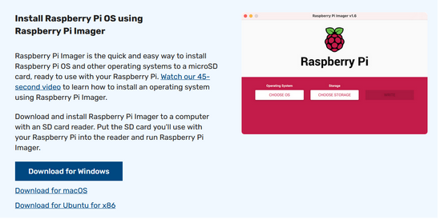

Para instalar Libre Elec nos vamos a la página oficial de Raspberry y entramos en Software.
Ahora es el momento de bajarnos la ISO para ello tenemos que seleccionar nuestro sistema operativo, en nuestro caso Windows ya que lo hicimos en un ordenador ajeno a la Raspberry Pi.
Una vez descargada, abrimos el .exe que se nos ha guardado. y lo instalamos.
Cuando acaba de instalarse nos sale la siguiente pantalla. Aquí tenemos que escoger el sistema operativo que queremos, en nuestro caso Libre Elec y donde se va a escribir por ejemplo, una tarjeta sd o un pendrive. Le damos a escribir y esperamos a que acabe, una vez esté acabado ya podemos poner la tarjeta sd o pendrive en la raspberry y comprobar si funciona.